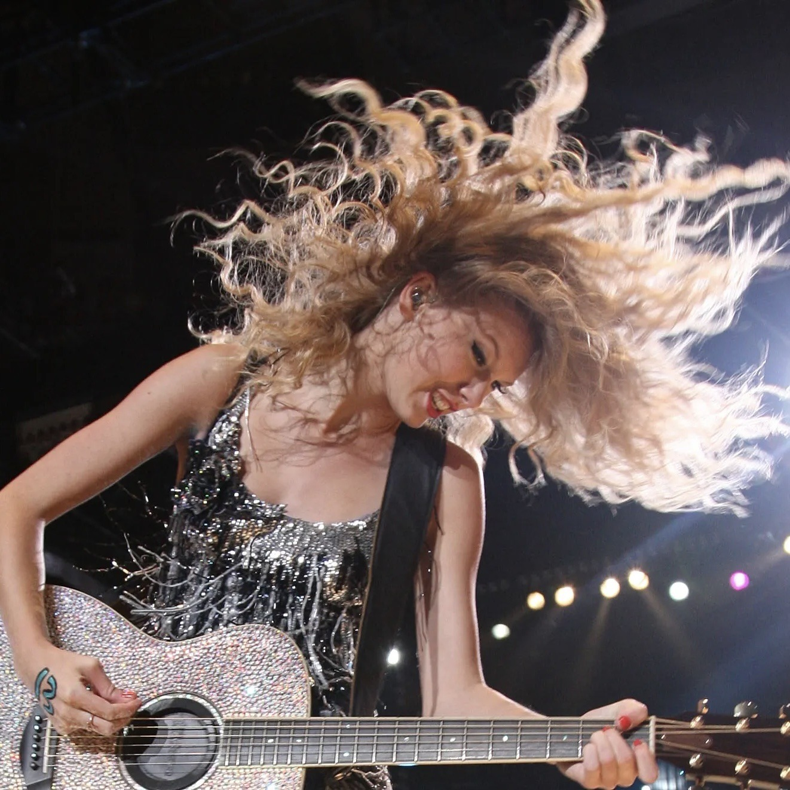
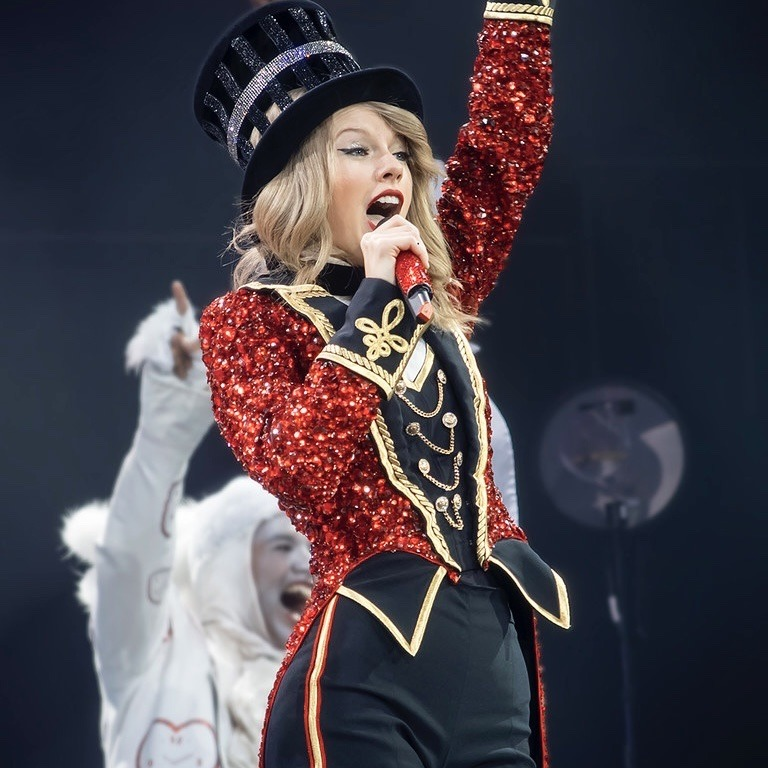
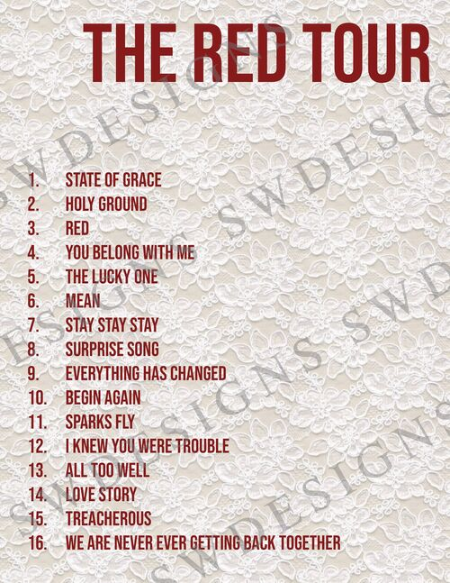
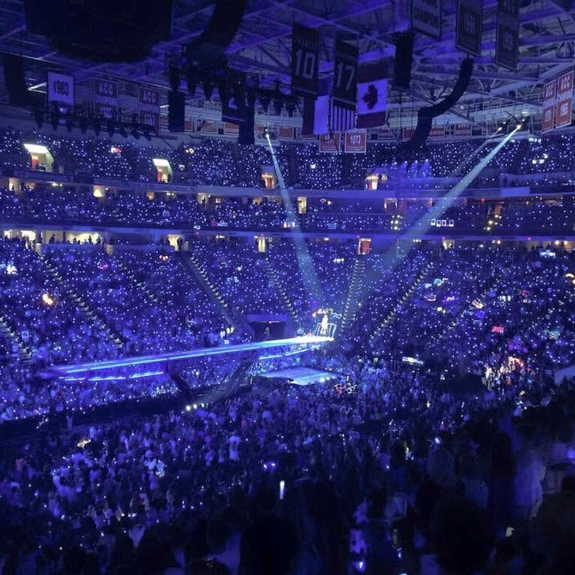
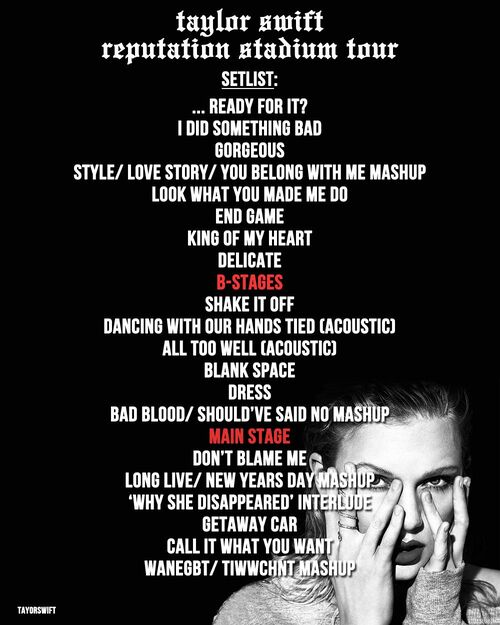

FEARLESS TOUR

SETLIST
ARTISTAS INVITADOS
22 de mayo de 2009 (Los Ángeles, California): John Mayer - Your Body Is A Wonderland + White
Horse
12 de septiembre de 2009 (Nashville, Tennessee): Faith Hill - The Way You Love Me
15 de abril de 2010 (Los Ángeles, California): Katy Perry - Hot 'N Cold
INFORMACION
El Fearless Tour comenzó el 23 de abril de 2009 y finalizó el 10 de julio de 2010, con un
total de 118 conciertos en total, y recaudó la suma de 66,5 millones de dólares.
Varios de los conciertos de la gira formaron parte de diferentes festivales de Estados
Unidos y Canadá.
Los teloneros de la gira fueron Gloriana y Kellie Pickler, que además, casi al final del
concierto, se unían a Taylor en en el escenario para cantar con ella I'm Only Me When I'm
With You, además de Justin Bieber en Inglaterra.
Andrea pintaba un 13 en la mano a Taylor cada noche antes del concierto.
Durante uno de los conciertos, Taylor sorprendió al público cantando Sparks Fly, con la
letra original y en su versión más country, un año antes de que la canción saliera lanzada
en álbum oficialmente.
Durante una de las actuaciones de Love Story, en el momento en que Taylor debía bajar la
escalera hasta el escenario principal, se le enganchó el vestido y pasó unos incómodos
segundos intentando desengancharlo riéndose a la vez que iba cantando.
La última noche de la gira fue tan emocionante para Taylor que, de camino de vuelta a casa,
rememorando todo lo que había vivido, escribió Long Live, en aproximadamente media hora.
SPEAK NOW WORLD TOUR
SETLIST
ARTISTAS INVITADOS
23 de agosto de 2011 (Los Ángeles, California): Justin Bieber - Baby
24 de agosto de 2011 (Los Ángeles, California): Jason Mraz - I'm Yours
27 de agosto de 2011 (Los Ángeles, California): Hot Chelle Rae - Tonight, Tonight
28 de agosto de 2011 (Los Ángeles, California): Nicki Minaj - Super Bass
10 de septiembre de 2011 (Vancouver, Columbia Británica): Tal Bachman - She's So High
16 de septiembre de 2011 (Nashville, Tennessee): Hayley Williams - That's What You Get
16 de septiembre de 2011 (Nashville, Tennessee): Ronnie Dunn - Bleed Red
17 de septiembre de 2011 (Nashville, Tennessee): Kenny Chesney - Big Star
17 de septiembre de 2011 (Nashville, Tennessee): Andy Grammer - Keep Your Head Up
17 de septiembre de 2011 (Nashville, Tennessee): Tim McGraw - Just To See You Smile
1 de octubre de 2011 (Atlanta, Georgia): Usher - Yeah!
2 de octubre de 2011 (Atlanta, Georgia): T.I. - Live Your Life
8 de octubre de 2011 (Arlington, Texas): B.o.B. - Airplanes
21 de octubre de 2011 (Glendale, Arizona): Jon Foreman de Switchfood - Meant To Live
22 de octubre de 2011 (Glendale, Arizona): Jim Adkins de Jimmy Eats World - The Middle
26 de octubre de 2011 (Austin, Texas): Shawn Colvin - Sunny Came Home
5 de noviembre de 2011 (Houston, Texas): Nelly - Just A Dream
13 de noviembre de 2011 (Miami, Florida): Flo Rida - Right Round
18 de noviembre de 2011 (Columbia, Carolina del Sur): Darius Rucker - Alright
21 de noviembre de 2011 (Nueva York, Nueva York): Johnny Rzeznik de Goo Goo Dolls - Iris
22 de noviembre de 2011 (Nueva York, Nueva York): Selena Gomez - Who Says
22 de noviembre de 2011 (Nueva York, Nueva York): James Taylor - Fire and Rain
INFORMACION
El Speak Now World Tour comenzó el 6 de febrero de 2011 y finalizó el 18 de marzo de 2012,
con un total de 111 conciertos en total, y recaudó la suma de 123,5 millones de dólares,
casi el doble que el tour anterior.
Los teloneros de la gira fueron varios (más de quince) y de diversos estilos musicales, y
variaron dependiendo del país; estos artistas fueron desde Needtobreathe y Hunter Hayes en
Norteamérica, hasta Hot Chelle Rae en Australia, pasando por Martin and James en Inglaterra
y Alemania y The Bright en España.
Los datos de gestión y mantenimiento de la gira implicaron un total de 130 personas
(artistas, equipo, seguridad y el resto de personal), 350 luces y 116 altavoces, que
viajaban de ciudad en ciudad en 21 camionetas y 13 autobuses.
Taylor empezó a escribirse letras y citas en el brazo durante uno de los ensayos del tour en
que el día no le estaba yendo muy bien. Para animarse a sí misma se escribió el verso
"You've got every right to a beautiful life", de Who Says (Selena Gomez). Dice que eso le
dio suerte y que le gustó cómo quedaba, así que decidió ponerlo en práctica con diferentes
frases cada noche de la gira.
Durante la actuación de You Belong With Me, en uno de los conciertos de la gira, a Taylor se
le subió el vestido sin querer, quizá por estar el ventilador del suelo demasiado fuerte.
Todos los medios empezaron a decir que parecía habérsele visto todo, pero en realidad
llevaba pantalones cortos debajo, así que se acabó convirtiendo en una de las anécdotas más
divertidas del tour.
RED TOUR

SETLIST

ARTISTAS INVITADOS
19 de marzo de 2013 (St. Louis, Missouri): Nelly - Hey Porsche
28 de marzo de 2013 (Newark, Nueva Jersey): Tyler Glenn de Neon Trees - Everybody Talks
29 de marzo de 2013 (Newark, Nueva Jersey): Pat Monahan de Train - Drive By
19 de abril de 2013 (Atlanta, Georgia): B.o.B. - Both Of Us
13 de julio de 2013 (East Rutherford, Nueva Jersey): Patrick Stump de Fall Out Boy - My
Songs Know What You Did In The Dark (Light 'Em Up)
26 de julio de 2013 (Foxborough, Massachusetts): Carly Simon - You're So Vain
19 de agosto de 2013 (Los Ángeles, California): Cher Lloyd - Want U Back
19 de agosto de 2013 (Los Ángeles, California): Sara Bareilles - Brave
20 de agosto de 2013 (Los Ángeles, California): Tegan and Sara - Closer
23 de agosto de 2013 (Los Ángeles, California): Ellie Goulding - Anything Could Happen
24 de agosto de 2013 (Los Ángeles, California): Jennifer Lopez - Jenny From The Block
27 de agosto de 2013 (Sacramento, California): Gary Lightbody de Snow Patrol - The Last Time
19 de septiembre de 2013 (Nashville, Tennessee): Luke Bryan - I Don't Want This Night To End
20 de septiembre de 2013 (Nashville, Tennessee): Rascal Flatts - What Hurts The Most
21 de septiembre de 2013 (Nashville, Tennessee): Hunter Hayes - I Want Crazy
1 de febrero de 2014 (Londres, Inglaterra): Ed Sheeran - Lego House
2 de febrero de 2014 (Londres, Inglaterra): Sam Smith - Money On My Mind
4 de febrero de 2014 (Londres, Inglaterra): Danny O'Donoghue de The Script - Breakeven
7 de febrero de 2014 (Berlín, Alemania): Ed Sheeran - I See Fire
10 de febrero de 2014 (Londres, Inglaterra): Emeli Sandé - Next To Me
11 de febrero de 2014 (Londres, Inglaterra): Ellie Goulding - Burn
INFORMACION
El Red Tour comenzó el 13 de marzo de 2013 y finalizó el 12 de junio de 2014, con un total
de 86 conciertos, y recaudó la suma de 150,2 millones de dólares.
El telonero principal de la gira fue Ed Sheeran, que la acompañó durante toda la parte de
Norteamérica, para cantar con ella, además, Everything Has Changed. Otros teloneros
ocasionales fueron Austin Mahone, Brett Eldredge, Florida Georgia Line, Casey James y The
Vamps, entre otros.
En el casting para bailarines de la gira se presentaron más de 1000 personas, y la anécdota
es que una de esas personas fue Elliotte Nicole, una de las coristas de Taylor. En medio de
su casting, mencionó que también cantaba, por lo que Taylor le pidió que lo hiciera. Le
gustó tanto, que le dijo: "Sé que te has presentado al casting para ser una de los
bailarines, pero me ha encantado tanto tu voz que me gustaría que te unieras a la banda como
corista." Ella y otras tres chicas más formarían el grupo de coristas que acompañaría a
Taylor en cada actuación, a quienes más tarde se las conocería como Las Starlight.
Durante el concierto en Pittsburgh, Taylor se partió un diente sin querer al golpearse con
el micrófono en la boca. Desde entonces, Jack Antonoff la llama "diente muerto".
En el concierto en Chicago, en medio de la actuación de Love Story, le entró un bicho en la
boca a Taylor, y tuvo que dejar de cantar durante unos segundos.
Taylor nunca se presentó al casting para The Giver, y ni mucho menos para interpretar a
Rosemary. Durante un par de conciertos en Los Ángeles, varios productores y demás personal
del equipo de la película estaban entre el público viéndola cantar. Taylor dice que, aunque
sabía que estaban allí, nunca se imaginó que a la semana siguiente fuera a tener un papel
para su película. De hecho, en el guión original no estaba escrito que Rosemary debiera
saber tocar el piano: la actuación de All Too Well les pareció tan emocionante, que
simplemente les pareció una buena idea para añadir al personaje.
1989 WORLD TOUR

SETLIST
ARTISTAS INVITADOS
15 de mayo de 2015 (Las Vegas, California) [Rock in Rio 2015]: Ed Sheeran - Tenerife Sea
30 de mayo de 2015 (Detroit, Michigan): Dan Reynolds de Imagine Dragons - Radioactive
6 de junio de 2015 (Pittsburgh, Pensilvania): Little Big Town - Pontoon
12 de junio de 2015 (Filadelfia, Pensilvania): Echosmith - Cool Kids
13 de junio de 2015 (Filadelfia, Pensilvania): Rachel Platten - Fight Song
10 de julio de 2015 (East Rutherford, Nueva Jersey): The Weeknd - Can't Feel My Face
11 de julio de 2015 (East Rutherford, Nueva Jersey): Nick Jonas - Jealous
13 de julio de 2015 (Washington DC, Maryland): Lorde - Royals
14 de julio de 2015 (Washington DC, Maryland): Jason Derulo - Want To Want Me
18 de julio de 2015 (Chicago, Illinois): Andy Grammer - Honey, I'm Good
19 de julio de 2015 (Chicago, Illinois): Sam Hunt - Take Your Time
24 de julio de 2015 (Foxborough, Massachusetts): Walk the Moon - Shup Up and Dance
25 de julio de 2015 (Foxborough, Massachusetts): MKTO - Classic
1 de agosto de 2015 (Vancouver, British Columbia): Nico & Vinz - Am I Wrong
8 de agosto de 2015 (Seattle, Washington): Fetty Wap - Trap Queen
14 de agosto de 2015 (Santa Clara, California): Fifth Harmony - Worth It
15 de agosto de 2015 (Santa Clara, California): Little Mix - Black Magic
21 de agosto de 2015 (Los Angeles, California): Ryan Tedder de OneRepublic - Counting Stars
22 de agosto de 2015 (Los Angeles, California): Uzo Aduba - White Horse
22 de agosto de 2015 (Los Angeles, California): Mary J. Blige - Doubt + Family Affair
24 de agosto de 2015 (Los Angeles, California): Natalie Maines - Goodbye Earl
24 de agosto de 2015 (Los Angeles, California): Alanis Morrissette - You Oughta Know
25 de agosto de 2015 (Los Angeles, California): Beck y St. Vincent - Dreams
25 de agosto de 2015 (Los Angeles, California): John Legend - All of Me
26 de agosto de 2015 (Los Angeles, California): Selena Gomez - Good for You
26 de agosto de 2015 (Los Angeles, California): Lisa Kudrow - Smelly Cat
26 de agosto de 2015 (Los Angeles, California): Justin Timberlake - Mirrors
29 de agosto de 2015 (San Diego, California): OMI - Cheerleader
29 de agosto de 2015 (San Diego, California): Avril Lavigne - Complicated
9 de septiembre de 2015 (Houston, Texas): Wiz Khalifa - See You Again
16 de septiembre de 2015 (Indianapolis, Indiana): The Band Perry - If I Die Young
18 de septiembre de 2015 (Columbus, Ohio): Sydney Sierota de Echosmith - Cool Kids
21 de septiembre de 2015 (Kansas City, Missouri): Dierks Bentley - Every Mile A Memory
25 de septiembre de 2015 (Nashville, Tennessee): Kelsea Ballerini - Love Me Like You Mean It
25 de septiembre de 2015 (Nashville, Tennessee): Steven Tyler de Aerosmith - I Don't
WannaMiss A Thing
25 de septiembre de 2015 (Nashville, Tennessee): Alison Krauss - When You Say Nothing At All
26 de septiembre de 2015 (Nashville, Tennessee): Leona Lewis - Bleeding Love
26 de septiembre de 2015 (Nashville, Tennessee): Mick Jagger de The Rolling Stones
-Satisfaction
29 de septiembre de 2015 (St. Louis, Minnesota): Nelly - The Fix
29 de septiembre de 2015 (St. Louis, Minnesota): Nelly y HAIM - Hot in Herre
2 de octubre de 2015 (Toronto, Ontario): Keith Urban - John Cougar, John Deere, John 3:16
+Somebody Like You
3 de octubre de 2015 (Toronto, Ontario): Charlie XCX - Boom Clap
17 de octubre de 2015 (Arlington, Texas): Ellie Goulding - Love Me Like You Do
21 de octubre de 2015 (Greensboro, Carolina del Norte): Miranda Lambert - Little Red Wagon
24 de octubre de 2015 (Atlanta, Georgia): Tove Lo - Talking Body
27 de octubre de 2015 (Miami, Florida): Pitbull - Give Me Everything
27 de octubre de 2015 (Miami, Florida): Ricky Martin - Livin' La Vida Loca
31 de octubre de 2015 (Tampa, Florida): Alessia Cara - Here
31 de octubre de 2015 (Tampa, Florida): Idina Menzel - Let It Go
INFORMACION
El 1989 Tour comenzó el 5 de mayo de 2015 y finalizó el 12 de diciembre de 2015, con un
total de 85 conciertos, y recaudó la suma de 250,7 millones de dólares.
El telonero principal de la gira fue Vance Joy, aunque los demás teloneros ocasionales, solo
en ciudades señaladas, fueron Shawn Mendes, las hermanas Haim y James Bay.
Taylor estuvo planeando el 1989 Tour durante once meses, desde junio de 2014.
Los datos de gestión del tour incluían 26 semi-trailers y 11 autobuses, que transportaban,
de ciudad en ciudad, a 146 personas en total. Además, cuando llegaban al estadio
correspondiente, entre 120 y 150 personas más eran contratadas para desempacar y montar el
escenario, proceso que duraba entre 6 y 8 horas en arenas y un día entero en estadios.
Taylor llamó "Winky" al piano que usó en el 1989 Tour. Además, fue creado con fibra de
vidrio a partir de un molde previamente diseñado, para darle la apariencia de concha marina.
Los periódicos que los bailarines tienen en las manos cuando salen al escenario, justo antes
de comenzar la actuación de Welcome to New York, solo llevan impresa la letra de dicha
canción una y otra vez.
I Know What You Did Last Summer, canción de Shawn Mendes y Camila Cabello, fue escrita por
ambos entre los bastidores del 1989 Tour. Esa noche, él era el telonero y ella iba de
invitada sorpresa con su antigua banda.
REPUTATION STADIUM WORLD TOUR
SETLIST

ARTISTAS INVITADOS
18 de mayo de 2018 (Pasadena, California): Shawn Mendes - There's Nothing Holdin' Me Back
19 de mayo de 2018 (Pasadena, California): Troye Sivan - My My My!
19 de mayo de 2018 (Pasadena, California): Selena Gomez - Hands to Myself
22 de junio de 2018 (Londres, Inglaterra): Niall Horan - Slow Hands
23 de junio de 2018 (Londres, Inglaterra): Robbie Williams - Angels
26 de julio de 2018 (Foxborough, Massachusetts): Hayley Williams - Curious
4 de agosto de 2018 (Toronto, Canadá): Bryan Adams - Summer of '69
25 de agosto de 2018 (Nashville, Tennessee): Tim McGraw y Faith Hill - Tim McGraw
5 de octubre de 2018 (Arlington, Texas): Maren Morris - The Middle
6 de octubre de 2018 (Arlington, Texas): Sugarland - Babe
INFORMACION
El reputation Stadium Tour dio comienzo la noche del 8 de mayo de 2018, en la ciudad de
Glendale, Arizona, y finalizó el 21 de noviembre del mismo año, en Tokio, Japón, recogiendo
un total de 53 conciertos, y recaudando la suma de 345,7 millones de dólares.
Las teloneras principales de la gira fueron Charli XCX y Camila Cabello, que interpretaban
sus mejores canciones durante 40 minutos cada una previamente a dar paso a Taylor en el
escenario.
Taylor estuvo planeando el reputation Stadium Tour durante más de un año, desde marzo de
2017.
En cuanto a la puesta en escena, estuvo principalmente compuesta de tres escenarios: uno
principal que medía 33,5 metros de altura, y otros dos B situados en medio del público.
Además, todos los conciertos de la gira contaron con una cobra gigante inflable (llamada
Karyn), una fuente con agua y varias decenas de fuegos artificiales, además de un elevador
con forma de balcón mágico y otro de esqueleto de serpiente.